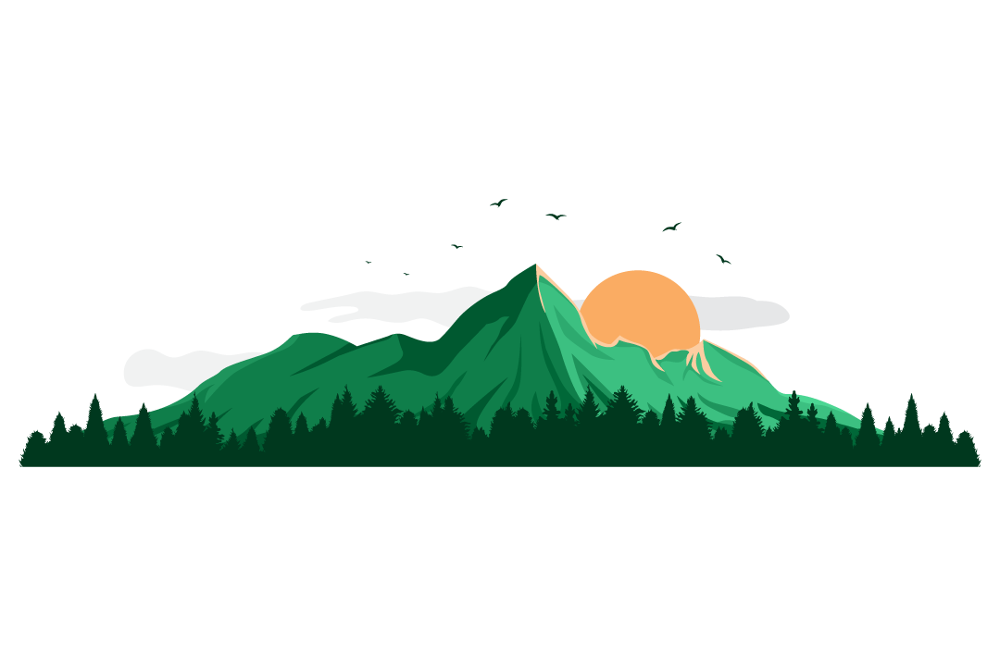
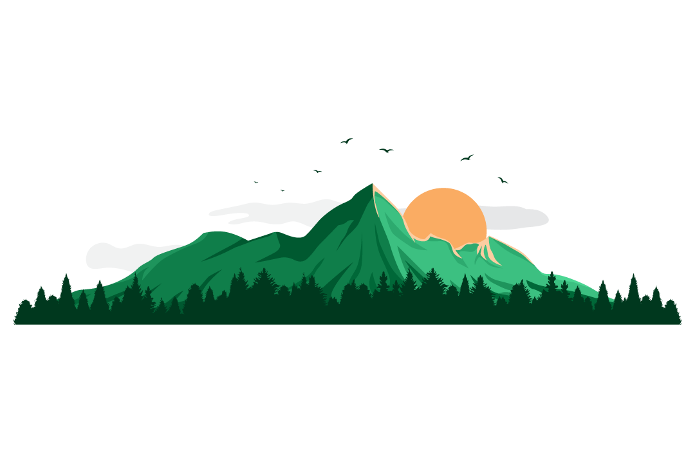

I'm Michael
A Web Developer ITP


I'm An Undergraduate studying Electronics and Computer Engineering at Nnamdi Azikiwe University. I love being 🤓 geeky at times.
I started learning web design at 2022, but i wanted to know more about the building blocks and structure of the web, so I'm on my front end learning journey. I want to make useful apps and fun apps also; maybe a great music app for ios and andriod.
I am a big time Anime fan,the most classic anime to me is bungo stray dogs and my best anime is One Piece. I also enjoy watching movies and series, they keep me engaged, I'm a lover of so many genres of music, MuSiC iS lIfE.
y'all love watching movies and listening to music?Let's talk about how awesone they are! We can code while we listen to music too